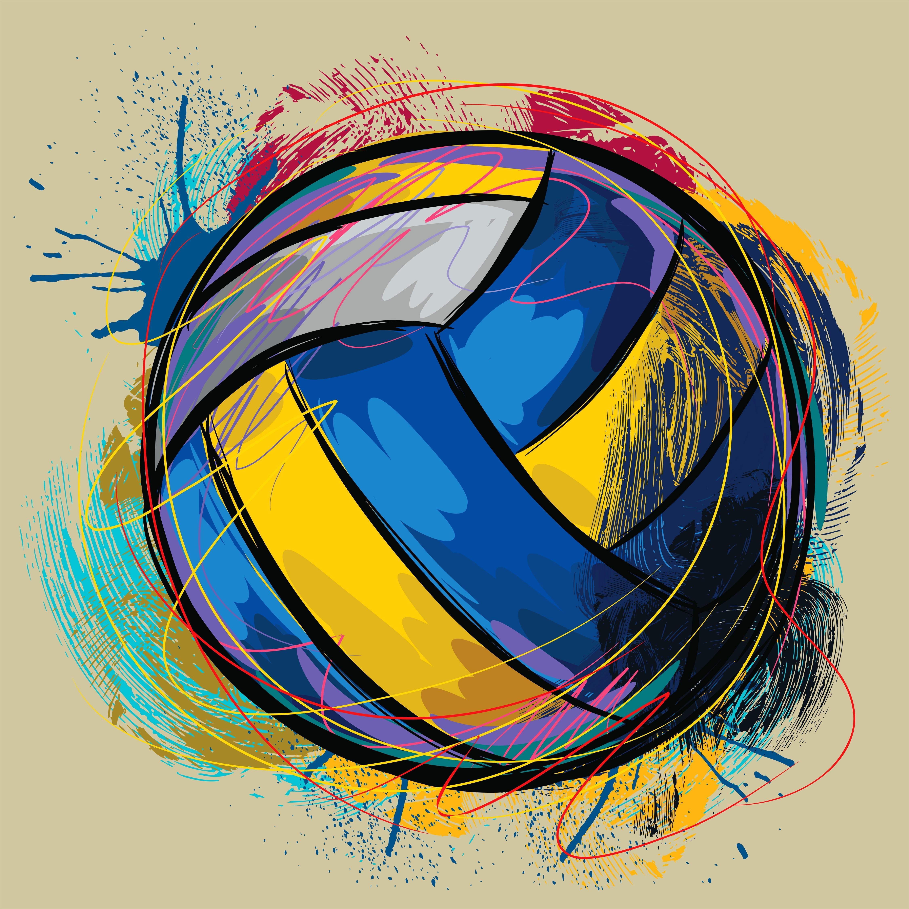
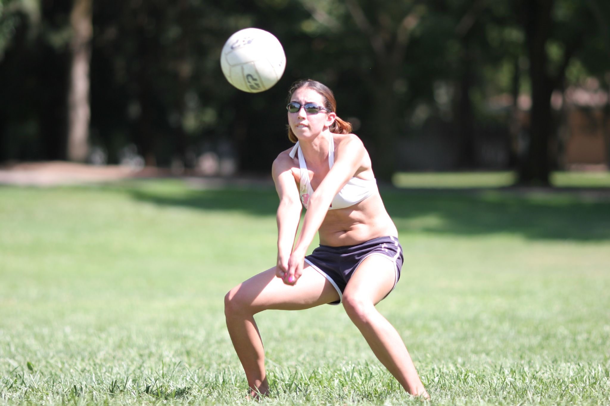
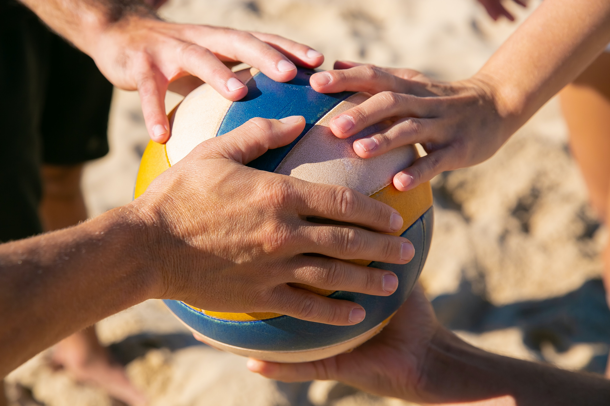

Volleyball

Volleyball is a team sport in which two teams of six players are separated by a net. Each team tries to score
points by grounding a ball on the other team's court under organized rules. It has been a part of the
official program of the Summer Olympic Games since Tokyo 1964. Beach Volleyball was introduced to the
programme
at the Atlanta 1996. The adapted version of volleyball at the Summer Paralympic Games is sitting
volleyball.
The complete set of rules is extensive, but play essentially proceeds as follows: a player on one of the
teams
begins a 'rally' by serving the ball (tossing or releasing it and then hitting it with a hand or arm), from
behind the back boundary line of the court, over the net, and into the receiving team's court. The receiving
team must not let the ball be grounded within their court. The team may touch the ball up to three times to
return the ball to the other side of the court, but individual players may not touch the ball twice
consecutively. Typically, the first two touches are used to set up for an attack. An attack is an attempt to
direct the ball back over the net in such a way that the team receiving the ball is unable to pass the ball
and
continue the rally, thus, losing the point. The team that wins the rally is awarded a point and serves the
ball
to start the next rally. A few of the most common faults include:
- causing the ball to touch the ground or floor outside the opponents' court or without first passing over the net;
- catching and throwing the ball;
- double hit: two consecutive contacts with the ball made by the same player;
- four consecutive contacts with the ball made by the same team;
- net foul: touching the net during play;
- foot fault: the foot crosses over the boundary line when serving.
The ball is usually played with the hands or arms, but players can legally strike or push (short contact) the
ball with any part of the body.
A number of consistent techniques have evolved in volleyball, including spiking and blocking (because these
plays are made above the top of the net, the vertical jump is an athletic skill emphasized in the sport) as
well
as passing, setting, and specialized player positions and offensive and defensive structures.
Origin
In the winter of 1895, in Holyoke, Massachusetts (United States), William G. Morgan, a YMCA physical
education
director, created a new game called Mintonette, a name derived from the game of badminton, as a pastime to
be
played (preferably) indoors and by any number of players. The game took some of its characteristics from
other
sports such as baseball, tennis and handball. Another indoor sport, basketball, was catching on in the area,
having been invented just ten miles (sixteen kilometres) away in the city of Springfield, Massachusetts,
only
four years before. Mintonette was designed to be an indoor sport, less rough than basketball, for older
members
of the YMCA, while still requiring a bit of athletic effort.
The first rules, written down by William G. Morgan, called for a net 6 ft 6 in (1.98 m) high, a 25 ft × 50
ft
(7.6 m × 15.2 m) court, and any number of players. A match was composed of nine innings with three serves
for
each team in each inning, and no limit to the number of ball contacts for each team before sending the ball
to
the opponents' court. In case of a serving error, a second try was allowed. Hitting the ball into the net
was
considered a foul (with loss of the point or a side-out)—except in the case of the first-try serve.
After an observer, Alfred Halstead, noticed the volleying nature of the game at its first exhibition match
in
1896, played at the International YMCA Training School (now called Springfield College), the game quickly
became
known as volleyball (it was originally spelled as two words: "volley ball"). Volleyball rules were slightly
modified by the International YMCA Training School and the game spread around the country to various
YMCAs.
The Court Dimensions
A volleyball court is 9 m × 18 m (29.5 ft × 59.1 ft), divided into equal square halves by a net with a width
of
one meter (39.4 in). The top of the net is 2.43 m (7 ft 11+11⁄16 in) above the center of the court for men's
competition, and 2.24 m (7 ft 4+3⁄16 in) for women's competition, varied for veterans and junior
competitions.
After a team gains the serve (also known as siding out), its members must rotate in a clockwise direction,
with
the player previously in area "2" moving to area "1" and so on, with the player from area "1" moving to area
"6". Each player rotates only one time after the team gains possession of the service; the next time each
player rotates will be after the other team wins possession of the ball and loses the point.
The team courts are surrounded by an area called the free zone which is a minimum of 3 meters wide and which
the
players may enter and play within after the service of the ball. All lines denoting the boundaries of the
team court and the attack zone are drawn or painted within the dimensions of the area and are therefore a
part
of the court or zone. If a ball comes in contact with the line, the ball is considered to be "in". An
antenna is
placed on each side of the net perpendicular to the sideline and is a vertical extension of the side
boundary of
the court. A ball passing over the net must pass completely between the antennae (or their theoretical
extensions to the ceiling) without contacting them.
The minimum height clearance for indoor volleyball courts is 7 m (23.0 ft), although a clearance of 8 m
(26.2
ft) is recommended.
A line 3 m (9.8 ft) from and parallel to the net is considered the "attack line". This "3 meter" (or
"10-foot")
line divides the court into "back row" and "front row" areas (also back court and front court). These are in
turn divided into 3 areas each: these are numbered as follows, starting from area "1", which is the position
of
the serving player:
Skills
Competitive teams master six basic skills: serve, pass, set, attack, block and dig. Each of these skills comprises a number of specific techniques that have been introduced over the years and are now considered standard practice in high-level volleyball.
Serve
A player stands behind the inline and serves the ball, in an attempt to drive it into the opponent's court.
The
main objective is to make it land inside the court; it is also desirable to set the ball's direction, speed
and
acceleration so that it becomes difficult for the receiver to handle it properly. A serve is called an "ace"
when the ball lands directly onto the court or travels outside the court after being touched by an opponent;
when the only player on the server's team to touch the ball is the server.
In contemporary volleyball, many types of serves are employed:
- Underhand: a serve in which the player strikes the ball below the waist instead of tossing it up and striking it with an overhand throwing motion. Underhand serves are considered very easy to receive and are rarely employed in high-level competitions.
- Sky ball serve: a specific type of underhand serve occasionally used in beach volleyball, where the ball is hit so high it comes down almost in a straight line. This serve was invented and employed almost exclusively by the Brazilian team in the early 1980s and is now considered outdated. During the 2016 Olympic Games in Rio de Janeiro, however, the sky ball serve was extensively played by Italian beach volleyball player Adrian Carambula. In Brazil, this serve is called Jornada nas Estrelas (Star Trek).
- Topspin: an overhand serve where the player tosses the ball high and hits it with a wrist snap, giving it topspin which causes it to drop faster than it would otherwise and helps maintain a straight flight path. Topspin serves are generally hit hard and aimed at a specific returner or part of the court. Standing topspin serves are rarely used above the high school level of play.
- Float: an overhand serve where the ball is hit with no spin so that its path becomes unpredictable, akin to a knuckleball in baseball.
- Jump serve: an overhand serve where the ball is first tossed high in the air, then the player makes a timed approach and jumps to make contact with the ball, hitting it with much pace and topspin. This is the most popular serve among college and professional teams.
- Jump float: an overhand serve where the ball is tossed high enough that the player may jump before hitting it similarly to a standing float serve. The ball is tossed lower than a topspin jump serve, but contact is still made while in the air. This serve is becoming more popular among college and professional players because it has a certain unpredictability in its flight pattern.
Pass
Also called reception, the pass is the attempt by a team to properly handle the opponent's serve or any form
of
attack. Proper handling includes not only preventing the ball from touching the court but also making it
reach
the position where the setter is standing quickly and precisely.
The skill of passing involves fundamentally two specific techniques: underarm pass, or bump, where the ball
touches the inside part of the joined forearms or platform, at waistline; and overhand pass, where it is
handled
with
the fingertips, like a set, above the haed.Either are acceptable in professional and beach volleyball;
however,
there are much tighter regulations on the overhand pass in beach volleyball. When a player passes a ball to
their setter, it's ideal that the ball does not have a lot of spin to make it easier for the setter.
Set
The set is usually the second contact that a team makes with the ball.The main goal of setting is to put the
ball in the air in such a way that it can be driven by an attack into the opponent's court.The setter
coordinates the offensive movements of a team, and is the player who ultimately decides which player will
actually attack the ball.
As with passing, one may distinguish between an overhand and a bump set. Since the former allows for more
control over the speed and direction of the ball, the bump is used only when the ball is so low it cannot be
properly handled with fingertips, or in beach volleyball where rules regulating overhand setting are more
stringent. In the case of a set, one also speaks of a front or back set, meaning whether the ball is passed
in
the direction the setter is facing or behind the setter. There is also a jump set that is used when the ball
is
too close to the net. In this case, the setter usually jumps off their right foot straight up to avoid going
into the net. The setter usually stands about ⅔ of the way from the left to the right of the net and faces
the
left (the larger portion of net that he or she can see).
Sometimes a setter refrains from raising the ball for a teammate to perform an attack and tries to play it
directly onto the opponent's court. This movement is called a "dump".This can only be performed when the
setter is in the front row, otherwise it constitutes an illegal back court attack. The most common dumps are
to
'throw' the ball behind the setter or in front of the setter to zones 2 and 4. More experienced setters toss
the
ball into the deep corners or spike the ball on the second hit.
As with a set or an overhand pass, the setter/passer must be careful to touch the ball with both hands at
the
same time.If one hand is noticeably late to touch the ball this could result in a less effective set, as
well as the referee calling a 'double hit' and giving the point to the opposing team.
Attack
The attack, also known as the spike, is usually the third contact a team makes with the ball.The object of
attacking is to handle the ball so that it lands on the opponent's court and cannot be defended.A player
makes a series of steps (the "approach"), jumps, and swings at the ball.
Ideally, the contact with the ball is made at the apex of the hitter's jump. At the moment of contact, the
hitter's arm is fully extended above their head and slightly forward, making the highest possible contact
while
maintaining the ability to deliver a powerful hit. The hitter uses arm swing, wrist snap, and a rapid
forward
contraction of the entire body to drive the ball.A 'bounce' is a slang term for a very hard/loud spike that
follows an almost straight trajectory steeply downward into the opponent's court and bounces very high into
the
air. A "kill" is the slang term for an attack that is not returned by the other team thus resulting in a
point.
Contemporary volleyball comprises a number of attacking techniques:
- Backcourt (or back row): an attack performed by a back-row player. The player must jump from behind the 3-meter line before making contact with the ball, but may land in front of the 3-meter line. A Pipe Attack is when the center player in the back row attacks the ball.
- Line and Cross-court Shot: refers to whether the ball flies in a straight trajectory parallel to the sidelines, or crosses through the court in an angle. A cross-court shot with a very pronounced angle, resulting in the ball landing near the 3-meter line, is called a cut shot.
- Dip/Dink/Tip/Cheat/Dump: the player does not try to make a hit, but touches the ball lightly, so that it lands on an area of the opponent's court that is not being covered by the defence.
- Tool/Wipe/Block-abuse: the player does not try to make a hard spike, but hits the ball so that it touches the opponent's block and then bounces off-court.
- Off-speed hit: the player does not hit the ball hard, reducing its speed and thus confusing the opponent's defence.
- Quick hit/"One": an attack (usually by the middle blocker) where the approach and jump begin before the setter contacts the ball. The set (called a "quick set") is placed only slightly above the net and the ball is struck by the hitter almost immediately after leaving the setter's hands. Quick attacks are often effective because they isolate the middle blocker to be the only blocker on the hit.
- Slide: a variation of the quick hit that uses a low backset. The middle hitter steps around the setter and hits from behind him or her.
- Double quick hit/"Stack"/"Tandem": a variation of quick hit where two hitters, one in front and one behind the setter or both in front of the setter, jump to perform a quick hit at the same time. It can be used to deceive opposite blockers and free a fourth hitter attacking from back-court, maybe without block at all.
Block

Blocking refers to the actions taken by players standing at the net to stop or alter an opponent's
attack.
A block that is aimed at completely stopping an attack, thus making the ball remain in the opponent's court,
is
called offensive. A well-executed offensive block is performed by jumping and reaching to penetrate with
one's
arms and hands over the net and into the opponent's area.[3] It requires anticipating the direction the ball
will go once the attack takes place. It may also require calculating the best footwork to executing the
"perfect" block.
The jump should be timed so as to intercept the ball's trajectory prior to it crossing over the plane of the
net. Palms are held deflected downward roughly 45–60 degrees toward the interior of the opponents' court. A
"roof" is a spectacular offensive block that redirects the power and speed of the attack straight down to
the
attacker's floor as if the attacker hit the ball into the underside of a peaked house roof.
By contrast, it is called a defensive, or "soft" block if the goal is to control and deflect the hard-driven
ball up so that it slows down and becomes easier to defend. A well-executed soft-block is performed by
jumping
and placing one's hands above the net with no penetration into the opponent's court and with the palms up
and
fingers pointing backwards.
Blocking is also classified according to the number of players involved. Thus, one may speak of single (or
solo), double, or triple block.
Successful blocking does not always result in a "roof" and many times does not even touch the ball. While it
is
obvious that a block was a success when the attacker is roofed, a block that consistently forces the
attacker
away from their 'power' or preferred attack into a more easily controlled shot by the defence is also a
highly
successful block.
At the same time, the block position influences the positions where other defenders place themselves while
opponent hitters are spiking.
Dig
Digging is the ability to prevent the ball from touching one's court after a spike or attack, particularly a
ball
that is nearly touching the ground. In many aspects, this skill is similar to passing, or bumping: overhand
dig and bump are also used to distinguish between defensive actions taken with fingertips or with joined
arms.It varies from passing however in that is it a much more reflex based skill, especially at the higher
levels. It is especially important while digging for players to stay on their toes; several players choose
to
employ a split step to make sure they're ready to move in any direction.
Some specific techniques are more common in digging than in passing. A player may sometimes perform a
"dive",
i.e., throw their body in the air with a forward movement in an attempt to save the ball, and land on their
chest. When the player also slides their hand under a ball that is almost touching the court, this is called
a
"pancake". The pancake is frequently used in indoor volleyball, but rarely if ever in beach volleyball
because
the uneven and yielding nature of the sand court limits the chances that the ball will make good, clean
contact
with the hand. When used correctly, it is one of the more spectacular defensive volleyball plays.
Sometimes a player may also be forced to drop their body quickly to the floor to save the ball. In this
situation, the player makes use of a specific rolling technique to minimize the chances of injuries.
Team Play
Volleyball is essentially a game of transition from one of the above skills to the next, with choreographed
team
movement between plays on the ball. These team movements are determined by the teams chosen serve receive
system, offensive system, coverage system, and defensive system.
The serve-receive system is the formation used by the receiving team to attempt to pass the ball to the
designated setter. Systems can consist of 5 receivers, 4 receivers, 3 receivers, and in some cases 2
receivers.
The most popular formation at higher levels is a 3 receiver formation consisting of two left sides and a
libero
receiving every rotation. This allows middles and right sides to become more specialized at hitting and
blocking.
Offensive systems are the formations used by the offence to attempt to ground the ball into the opposing
court
(or otherwise score points). Formations often include designated player positions with skill specialization
(see
Player specialization, below). Popular formations include the 4–2, 6–2, and 5-1 systems (see Formations,
below).
There are also several different attacking schemes teams can use to keep the opposing defence off
balance.
Coverage systems are the formations used by the offence to protect their court in the case of a blocked
attack.
Executed by the 5 offensive players not directly attacking the ball, players move to assigned positions
around
the attacker to dig up any ball that deflects off the block back into their own court. Popular formations
include the 2-3 system and the 1-2-2 system. In lieu of a system, some teams just use a random coverage with
the
players nearest the hitter.
Defensive systems are the formations used by the defence to protect against the ball being grounded into
their
court by the opposing team. The system will outline which players are responsible for which areas of the
court
depending on where the opposing team is attacking from. Popular systems include the 6-Up, 6-Back-Deep, and
6-Back-Slide defence. There are also several different blocking schemes teams can employ to disrupt the
opposing
teams' offence.
When one player is ready to serve, some teams will line up their other five players in a screen to obscure
the
view of the receiving team. This action is only illegal if the server makes use of the screen, so the call
is
made at the referee's discretion as to the impact the screen made on the receiving team's ability to pass
the
ball. The most common style of screening involves a W formation designed to take up as much horizontal space
as
possible.
Strategy
Player specialization

There are five positions filled on every volleyball team at the elite level. Setter, Outside Hitter/Left Side Hitter, Middle Hitter, Opposite Hitter/Right Side Hitter and Libero/Defensive Specialist. Each of these positions plays a specific, key role in winning a volleyball match.
- Setters have the task for orchestrating the offence of the team. They aim for the second touch and their main responsibility is to place the ball in the air where the attackers can place the ball into the opponents' court for a point. They have to be able to operate with the hitters, manage the tempo of their side of the court and choose the right attackers to set. Setters need to have a swift and skilful appraisal and tactical accuracy and must be quick at moving around the court. At elite level, setters used to usually be the shortest players of a team (before liberos were introduced), not being typically required to perform jump hits, but that would imply need for short-term replacemente by taller bench players when critical points required more effective blocks; in the 1990s taller setters (e.g. Fabio Vullo, Peter Blangé) became being deployed, in order to improve blocks.
- Liberos are defensive players who are responsible for receiving the attack or serve. They are usually the players on the court with the quickest reaction time and best passing skills. Libero means 'free' in Italian—they receive this name as they have the ability to substitute for any other player on the court during each play. They do not necessarily need to be tall, as they never play at the net, which allows shorter players with strong passing and defensive skills to excel in the position and play an important role in the team's success. A player designated as a libero for a match may not play other roles during that match. Liberos wear a different colour jersey than their teammates.
- Middle blockers or Middle hitters are players that can perform very fast attacks that usually take place near the setter. They are specialized in blocking since they must attempt to stop equally fast plays from their opponents and then quickly set up a double block at the sides of the court. In non-beginners play, every team will have two middle hitters. At elite levels, middle hitters are usually the tallest players, whose limited agility is countered by their height enabling more effective blocks.
- Outside hitters or Left side hitters attack from near the left antenna. The outside hitter is usually the most consistent hitter on the team and gets the most sets. Inaccurate first passes usually result in a set to the outside hitter rather than middle or opposite. Since most sets to the outside are high, the outside hitter may take a longer approach, always starting from outside the court sideline. In non-beginners play, there are again two outside hitters on every team in every match. At elite level, outside hitters are slightly shorter than middle hitters and outside hitters, but have the best defensive skills, therefore always re-placing to the middle while in the back row.
- Opposite hitters or Right-side hitters carry the defensive workload for a volleyball team in the front row. Their primary responsibilities are to put up a well-formed block against the opponents' Outside Hitters and serve as a backup setter. Sets to the opposite usually go to the right side of the antennae. Therefore, they are usually the most technical hitters since balls lifted to the right side are quicker and more difficult to handle (the setters having to place the ball while slightly off-set to the right, and with their back to the attacker), and also having to jump from the back row when the setter is on the front row. At elite level, until the 1990s several opposite hitters used to be able to also play as middle hitters (e.g. Andrea Zorzi, Andrea Giani), before high specialization curtained this flexibility in the role.
Formations
The three standard volleyball formations are known as "4–2", "6–2" and "5–1", which refers to the number of hitters and setters respectively. 4–2 is a basic formation used only in beginners' play, while 5–1 is by far the most common formation in high-level play.
4-2
The 4–2 formation has four hitters and two setters. The setters usually set from the middle front or right
front
position. The team will, therefore, have two front-row attackers at all times. In the international 4–2, the
setters set from the right front position. The international 4–2 translates more easily into other forms of
offence.
The setters line up opposite each other in the rotation. The typical lineup has two outside hitters. By
aligning
like positions opposite themselves in the rotation, there will always be one of each position in the front
and
back rows. After service, the players in the front row move into their assigned positions, so that the
setter is
always in the middle front. Alternatively, the setter moves into the right front and has both a middle and
an
outside attacker; the disadvantage here lies in the lack of an offside hitter, allowing one of the other
team's
blockers to "cheat in" on a middle block.
The clear disadvantage to this offensive formation is that there are only two attackers, leaving a team with
fewer offensive weapons.
Another aspect is to see the setter as an attacking force, albeit a weakened force, because when the setter
is
in the frontcourt they are able to 'tip' or 'dump', so when the ball is close to the net on the second
touch,
the setter may opt to hit the ball over with one hand. This means that the blocker who would otherwise not
have
to block the setter is engaged and may allow one of the hitters to have an easier attack.
6-2
In the 6–2 formation, a player always comes forward from the back row to set. The three front row players are
all
in attacking positions. Thus, all six players act as hitters at one time or another, while two can act as
setters. So the 6–2 formation is actually a 4–2 system, but the back-row setter penetrates to set.
The 6–2 lineup thus requires two setters, who line up opposite to each other in the rotation. In addition to
the
setters, a typical lineup will have two middle hitters and two outside hitters. By aligning like positions
opposite themselves in the rotation, there will always be one of each position in the front and back rows.
After
service, the players in the front row move into their assigned positions.
The advantage of the 6–2 is that there are always three front-row hitters available, maximizing the
offensive
possibilities. However, not only does the 6–2 require a team to possess two people capable of performing the
highly specialized role of setter, it also requires both of those players to be effective offensive hitters
when
not in the setter position. At the international level, only the Cuban National Women's Team employs this
kind
of formation. It is also used by NCAA teams in Division III men's play and women's play in all divisions,
partially due to the variant rules used which allow more substitutions per set than the 6 allowed in the
standard rules—12 in matches involving two Division III men's teams and 15 for all women's play.
5-1
The 5–1 formation has only one player who assumes setting responsibilities regardless of their position in
the
rotation. The team will, therefore, have three front-row attackers when the setter is in the back row and
only
two when the setter is in the front row, for a total of five possible attackers.
The player opposite the setter in a 5–1 rotation is called the opposite hitter. In general, opposite hitters
do
not pass; they stand behind their teammates when the opponent is serving. The opposite hitter may be used as
a
third attack option (back-row attack) when the setter is in the front row: this is the normal option used to
increase the attack capabilities of modern volleyball teams. Normally the opposite hitter is the most
technically skilled hitter of the team. Back-row attacks generally come from the back-right position, known
as
zone 1, but are increasingly performed from back-centre in high-level play.
The big advantage of this system is that the setter always has 3 hitters to vary sets with. If the setter
does
this well, the opponent's middle blocker may not have enough time to block with the outside blocker,
increasing
the chance for the attacking team to make a point.
There is another advantage, the same as that of a 4–2 formation: when the setter is a front-row player, he
or
she is allowed to jump and "dump" the ball onto the opponent's side. This too can confuse the opponent's
blocking players: the setter can jump and dump or can set to one of the hitters. A good setter knows this
and
thus won't only jump to dump or to set for a quick hit, but when setting outside as well to confuse the
opponent.
The 5–1 offence is actually a mix of 6–2 and 4–2: when the setter is in the front row, the offense looks
like a
4–2; when the setter is in the back row, the offense looks like a 6–2.
